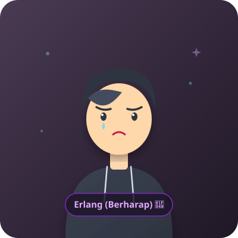
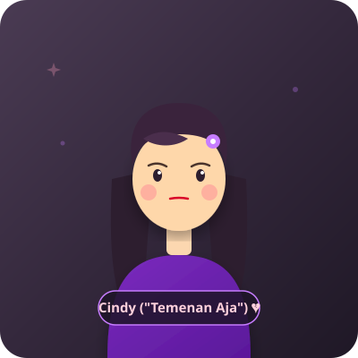

🥀
Ditolak 7 Kali • Angka Ronaldo 🌧️
💜
Erlangga Cindy
"Ngoding sambil nangis... persembahan dari seorang IT guy yang lugu"

📷
Erlang (Ditolak 7x) 🥀
💔
Ke-7 Kali

📷
Cindy ("Save You") 💔
💌 Awal Mula DM di IG
2 Juli 2026
Pertama kali kenal & cerita malam
86 Hari Cerita Kita 🥀
💔 Stop Komunikasi (Hari Ini)
26 September 2026
Subuh penolakan ke-7 (Nomor Ronaldo)
Waktu terus bertambah sejak 2 Juli sampai detik ini:
86
Hari
00
Jam
00
Menit
00
Detik
Erlang & Cindy 🥀
online • Obrolan Berdua